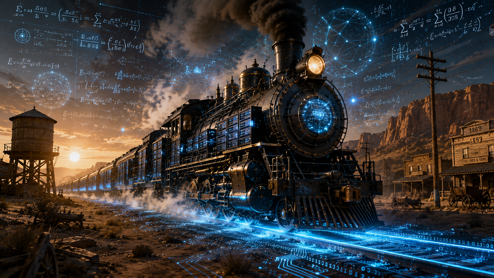

Os Barões do Novo Oeste: O Dia em que a Inteligência Artificial Virou Trem

O Novo Oeste Tecnológico: Uma metáfora visual sobre a expansão ferroviária do século XIX conectando-se ao avanço da inteligência artificial, onde os trilhos cruzam a imensidão do deserto sob o crepúsculo da regulação e a inevitável comoditização.
Tempo de leitura: 6 minutos
O mercado de tecnologia assistiu assustado ao bloqueio repentino do Claude Fable 5 pelo governo americano e aos processos por cotas de processamento obscuras. Para quem olha de fora, parecia o prenúncio de um colapso tecnológico; para quem observa a história com atenção, foi apenas mais um dia normal no front. O que as Big Techs venderam nos últimos anos como "magia revolucionária" e um monopólio intransponível começou a ruir diante de uma verdade incômoda: construir sistemas de negócios reais baseados em termos de serviço voláteis e APIs instáveis é construir castelos na areia. Engenharia exige determinismo e previsibilidade, duas coisas que o atual modelo de negócios do Vale do Silício não consegue entregar.
Percebendo essa fragilidade, a China e a comunidade de código aberto adotaram uma estratégia agressiva de comoditização. Ao lançar modelos de altíssimo nível (como a família DeepSeek e Qwen) por uma fração do custo das empresas americanas, eles iniciaram uma deflação global no mercado de IA. Não se trata de um ataque caótico, mas de uma tática macroeconômica coordenada para destruir as margens de lucro de Wall Street e forçar o mercado em direção a padrões abertos. As Big Techs ocidentais gritam, exigem regulações estatais rígidas e evocam a "segurança nacional" em um discurso inflamado. Mas a verdade por trás do gogó corporativo é pragmática: elas sabem que vão perder a exclusividade no longo prazo. O esperneio público serve apenas para ganhar tempo, tentar amortizar os bilhões investidos em data centers e prender o usuário pelo ecossistema de nuvem antes que o valor do software caia para perto de zero.
Essa briga é inútil porque essa história já aconteceu e o ser humano insiste em voltar na mesma tecla. É um roteiro manjado, desenhado para impressionar quem não estava lá para ver as ondas anteriores passarem. Na década de 1990, com a internet network, empresas como AOL e Microsoft tentaram criar redes fechadas e exclusivas, cobrando pedágios caros pelo acesso. Foram atropeladas quando os protocolos abertos e gratuitos (como o TCP/IP e o HTML) se espalharam e padronizaram o mundo. O mesmo fenômeno enterrou a arrogância das grandes gravadoras quando a pirataria descentralizada do MP3 e do Torrent forçou a música a virar uma utilidade acessível. Uma vez que a tecnologia atinge o nível de utilidade pública, o comportamento de massa e a busca pela conveniência econômica atropelam qualquer barreira legal.
Até mesmo o misticismo em torno do "pensamento" da IA não passa de narrativa comercial. Despida do marketing, a inteligência artificial moderna não é uma entidade viva; é um arquivo estático, uma função matemática congelada gerada a partir dos dados com os quais foi alimentada. Se um gerador de código foi treinado vendo código, ele apenas cruza essas informações estatisticamente. A matemática e a estatística clássicas continuam governando o processo: dentro do domínio dos dados de treino, o modelo interpola com segurança; forçado a ir além das suas condições de contorno, ele extrapola no vazio e alucina. Para não se perder no infinito, todo esse conhecimento é espremido e normalizado pelos engenheiros dentro de uma hiperesfera geométrica multidimensional de raio igual a um. A IA vive presa nesse grande globo matemático, calculando distâncias e ângulos entre conceitos.
Por isso, quando usuários tentam fazer com que a máquina crie livros inteiros a partir de comandos preguiçosos, o resultado é um texto previsível, com gosto de comida de micro-ondas, pois o modelo apenas calcula a média estatística do passado que está guardado em seu globo. A verdadeira criação não vem da máquina, mas sim da colisão intelectual na interação: a centelha, a vivência e a condição de contorno inédita saem da cabeça do humano, enquanto a IA atua como um espelho de alta dimensão que reflete e acelera a escrita.
Essa dinâmica inteira repete rigorosamente o enredo dos velhos filmes de bang-bang do século XIX. As Big Techs hoje agem exatamente como os barões das ferrovias da Transcontinental Railroad. Eles invadem territórios de dados ignorando regras, rasgam o mapa com seus trilhos digitais e tentam ditar o padrão inicial da indústria para garantir o monopólio do pedágio e do frete sobre as cidades e empresas dependentes. No Faroeste Digital, o discurso de "regulamentação para proteger a humanidade" nada mais é do que o magnata chamando o xerife para prender os saqueadores que tentam usar a estrada de graça. Mas quem conhece a história da tecnologia — ou assiste a muito filme de faroeste — sabe perfeitamente como a última cena termina: o caos da fronteira passa, os trilhos se estabilizam, o frete vira uma utilidade comum e tabelada, e o trem deixa de ser um milagre divino para se tornar apenas o meio de transporte ordinário que leva o mundo adiante.